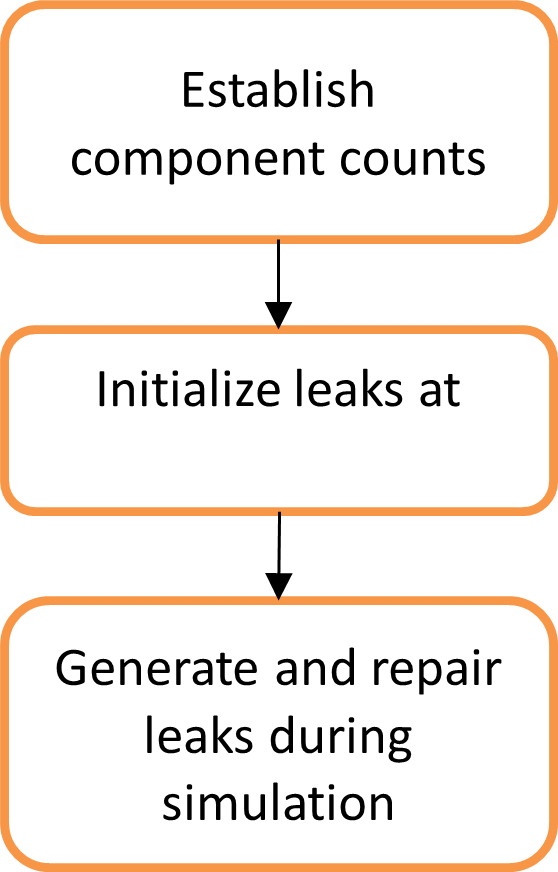

Leaks¶

Leak Model¶
This section covers how fugitive emissions – ‘leaks’ – are stochastically instantiated on the model, including the three basic processes shown above: (1) Establishing component counts; (2) Initialize components leaking at the start of the simulation, (3) Generate and repair component leaks during simulation. Leaks are modeled on each unit of major equipment at the component level. In general, the data for component leaks are covered in the discussion of that site or equipment type.
Component Counts: For a given unit of major equipment (e.g. a compressor), the model assigns component counts for each component type on the equipment, using one of two methods:
- Provided component counts:
For most component types, the number of components in a category – general components, thief hatches, etc. – are specified in the study input sheet. When specified, these counts are used to generate leaks.
- Drawing from an activity distribution:
For one component category (e.g. threaded connectors), each unit of major equipment is assigned \(n_{c}\) components, where \(n_{c}\) is drawn from an empirical distributions of component counts, and, in general, varies between mc iterations. In general, component count distributions are derived from published field studies that counted components for facilities or units of major equipment.
Leak Initialization: At the start of the simulation run, the model assumes that the fraction of components leaking in each component category equals the fraction seen leaking in field data used by the model. A typical field study screened \(n_{f}\) components and found \(n_{l}\) leaking (or emitting). The leak probability is therefore:
Over M mc simulations and K units of major equipment, the algorithm assures that the starting number of leaks converges to that seen in the field campaign(s). For each component category, the number of leaking components is, \(N_{s} = \sum_{M}^{}{\sum_{K}^{}n_{s}}\) and the total number of simulated components is \(N_{c} = \sum_{M}^{}{\sum_{K}^{}n_{c}}\). The simulated leak probability is therefore:
Over sufficiently large value of \(M \times N\), the algorithm converges to the leak probability target, that is, \(P_{s} \rightarrow P_{f}\) as \(M \times N \rightarrow inf\). In practice, this assignment converges to acceptable error differences when \(M \times N\) exceeds 10,000, although practical results are produced by as little as 1,000. Note that individual components are not tracked. Component counts per unit of major equipment are used only to assign leak probabilities. Mechanically, the algorithm creates a leak using the following algorithm. For each unit of major equipment, for each component type, draw \(n_{c}\) uniform random numbers on the range [0,1].
where bold characters represent a vector of numbers, \(r = r_{i},i = 1\ldots n_{c}\). Each random number is compared to the leak probability to determine the number of leaks initialized on this major equipment unit:
Where the expression in angle brackets is zero if false, and one if true. Each leaking component is assigned a leak rate by drawing randomly from an empirical distribution of leak rates. There is no variation in the leak rate with simulation time; a leaking component’s emission factor will remain the same until the leak has been repaired. Component count distributions (i.e. activity) and emissions distributions must correspond to the same definition of activity. For example, multiple PRVs on a compressor may be vented separately or may be plumbed into a single vent line. Studies may vary on whether all vents on a single compressor are treated as one leaking component (i.e. the ‘component’ is the combined vent line) or as individual PRVs. Therefore, the emission rate distribution must correspond to the activity definition – either ‘emissions per compressor’ with one ‘component’ per compressor, or as ‘emissions per PRV on a compressor’ with (potentially) multiple PRV components instantiated on each compressor.
Leak Generation and Repair: Additional leaks will occur after the start of the simulation. These leaks are generated when the simulated units for the mc run are instantiated. At the start of the simulation, these leaks are in a non-leaking state, and are set to switch states to ‘leaking’ at some later time.
To simulate these leaks, an assumption must be made on the frequency at which leaks appear on the simulated equipment. Most public data originate from field campaigns, and in the future, these may be augmented by company LDAR records. Most published data were produced in field campaigns that screened for leaks at many field locations, typically operated by many operators. Operators and facilities may differ in how often leak surveys are performed. Therefore, the leak generation rate seen in the field campaign is a function of:
The failure rate of each component category screened.
Frequency of surveys and the time since the last survey when the field measurements were conducted.
The fraction of leaks detected in a survey which are fixed before the next survey.
In general, these qualifying data are not available for published field campaigns. Therefore, the model makes several assumptions to produce a realistic leak generation rate.
First, the model assumes that leak surveys are conducted annually, and that all detected leaks were fixed shortly after they were detected, with all fixed before the next survey. Leaks detected during an annual survey therefore reflects the number of leaks which have appeared during the year.
Since most field campaigns screen and measure facilities at an arbitrary time during the year, on average the field campaign encountered the facility halfway between periodic screens. Therefore, if regular leak surveys have been performed on the study, the field campaign sees the leaks which started in ½ of the survey interval. If there are no regular surveys, the field campaign sees the long-term ‘stable’ leak frequency.
Unfortunately, data about leak survey frequency for studied facilities is not typically published with field studies. Therefore, the model assumes that the leak frequency encountered in the field study is equivalent to the new leak generation rate on an annual basis. In future model revisions, this will be adjusted to account survey frequency, such as that available from operator LDAR data.
Therefore, additional leaks are generated at the rate of \(P_{f}\) per simulation year.
Second, in the default case, where leak repair actions are not independently simulated, the repair action identified above must also be simulated. As a default, the model assumes that leaks are repaired at the same rate as they are generated, i.e. at a frequency of \(P_{f}\) per simulation year. Since repair actions are independent of leak-start actions, the number of leaks will rise and fall, but will, in general, average out to \(P_{s} \equiv P_{f}\) over a multi-year mc simulation.
Finally, it is important to note that individual components are not tracked. If a compressor has 150 threaded connectors, each connector is not instantiated and tracked through the simulation. However, if 2 of the connectors are leaking, 2 leaks are threaded connector leaks are generated and tracked. During a simulation, one threaded connector leak may be repaired, while another threaded connector may start leaking.
With this implementation, it is possible for a single component to leak, be repaired, and begin leaking again, potentially multiple times depending on the length of the simulation and the component’s likelihood of developing a leak. In this case, the component will randomly draw a new emission factor for every time that it begins leaking, and this emission factor will remain constant until the leak has been repaired.
Leak Calculations¶
For equipment with specific components, given MTTR, pLeak, Component Count:
However, it is easier to discuss MTTR and MTBF rather than Rr and Rf since MTTR and MTBF are whole numbers.
Average number of leaking components vs time, \(N_{lc}\), will stabilize when
Where \(N_{rc} = Number\ or\ not\ leaking\ components\) and \(N_{lc} = Number\ of\ leaking\ components\)
Substituting into the MTTR equation,
For general component leaks, given Survey Frequency, pLeak, Component Count, assume leaks measured during survey are repaired after they’re reported and there was no leak/repair before another survey (since we do not know leak and repair rate). Therefore, we assume the rate of failure (1/MTBF) is approximately number of failures/number of components per survey period.
Calculating number of leaks:¶
At the start of the simulation, we assume pLeak measured in the field to be the same as pLeak used in simulation. So, the simulation with pLeak = Nf/Nc would converge to pLeak measured during field studies over large number of Monte Carlo runs, M. To determine if a component is leaking, we compare a uniformly distributed random number to pLeak. If the random number is less than pLeak, there is a leak at time 0. If the number is greater than pLeak, we calculate the start time of a leak by drawing out a uniformly distributed random number that averages to MTBF over large MC runs . Once the component starts leaking, we determine the repair time by drawing a uniformly distributed random number that averages to MTTR. This process is continued till the end of sim time, and it generates a list of all the instances of leaks on the component. This is done for all the leaks in the equipment list.
Also note that if a component has MTTR already known during field studies (specific component leaks), we can expect multiple leaks in a year. And for components where leaks are determined through the frequency of surveys (general component leaks), we expect at the most one leak for that component during the survey period. Considering this, if we measure Nf/Nc from the simulated results at any particular time, we expect that fraction to converge to pLeak over large amount of MC runs.